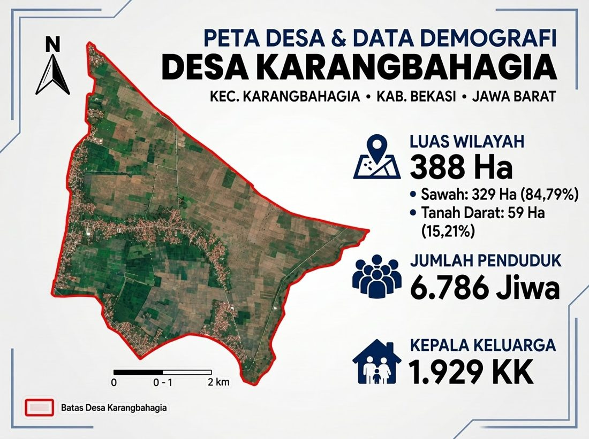

Profil Desa Karang Bahagia
Visi dan misi, wilayah, data penduduk, dan peta desa.
Sekilas wilayah
Desa Karang Bahagia adalah pusat pemerintahan Kecamatan Karangbahagia, satu dari delapan desa di kecamatan ini bersama Sukaraya, Karangrahayu, Karangsetia, Karanganyar, Karangsentosa, Karangsatu, dan Karangmukti. Kecamatan Karangbahagia sendiri adalah pemekaran dari Kecamatan Cikarang (kini Cikarang Utara).
Seluruh wilayahnya berupa dataran seluas 388 hektare. Sebagian besar masih berupa sawah, sehingga pertanian tetap menjadi tumpuan warga meskipun desa ini berada di kabupaten yang dikenal sebagai kawasan industri.
Penggunaan lahan
- Sawah 329 ha (84,79%)
- Tanah darat 59 ha (15,21%)
Angka luas, penduduk, dan kepala keluarga bersumber dari Pemerintah Desa Karang Bahagia. Keterangan kecamatan dan pemekaran wilayah dari BPS dan Wikipedia.
Visi
Visi desa akan ditampilkan di sini.
Misi
- Misi desa akan ditampilkan di sini.
Letak dan batas wilayah
- Kecamatan
- Karang Bahagia
- Kabupaten
- Bekasi, Jawa Barat
- Kode pos
- 17535
- Kode wilayah
- 32.16.10.2005
- Luas wilayah
- 388 ha
- Lahan sawah
- 329 ha
- Tanah darat
- 59 ha
- Batas utara
- –
- Batas selatan
- –
- Batas timur
- –
- Batas barat
- –
Data penduduk
Data Pemerintah Desa Karang Bahagia.
Peta wilayah desa
Batas Desa Karang Bahagia dan sebarannya: permukiman memanjang di sepanjang jalan, sisanya hamparan sawah.
